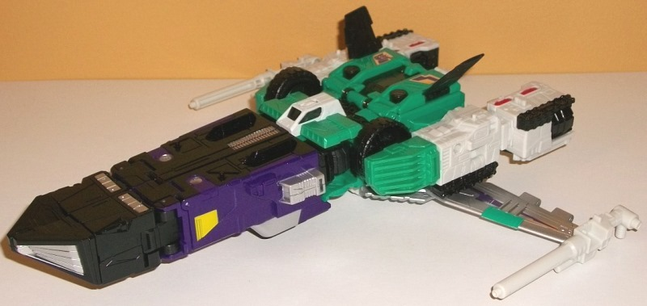

Allegiances
: Decepticon
Size
: Leader
Difficulty of Transformations
: Medium
Color Scheme
: Seafoam green, off-white,
black, dark purple, and some silver, red, tinted clear plastic, white,
and moderately pale seafoam green
Rating:
8.2
Revolver is the
appropriately-named Titan Master for Sixshot, and in robot mode he has
what I would call fairly "standard" Titan Master mold detailing-- i.e.,
it looks quite a bit like a human in a robo-suit, like a lot of G1 Headmasters/Targetmasters/Powermasters.
There are very human-proportioned arms molded onto the inside of his large
arm flaps and fairly rectangular, standard mold detailing on the legs.
His chest has an interesting "segmented" look to it with four different
little details on his chest, and the head looks very much like that of
your typical -Master, with a "normal" face surrounded by a helmet with
two blocky antennae. I kinda wish the arms weren't so thick, but otherwise
this looks pretty good-- mold-wise. Unfortunately there is no paint in
this mode at all, and the only colors visible are off-white on the legs
and seafoam green on the rest of the body. The colors certainly don't clash,
but just those two colors aren't enough to feel like a "complete" scheme.
His head and chest should have had a bit of paint, in particular. Like
with all Titan Masters, Revolver can move at the head and back-and-forth
at the shoulders, hips, and knees, with the latter two moving as one since
the lower legs are connected into a "uni-leg". In head mode, Revolver suffers
from the same issue as other Titan Masters paired with Leader-class figures--
the head on the Leader class figures needs to be bigger than your average
Titan Master, so he's not a complete head by himself, Rather, he's Sixshot's
faceplate and eyes with just a TITCH of his helmet on the side; the forehead
isn't nearly large enough, with some neat "neurocircruitry" details on
said forehead that make it look like they connect to the inside of the
helmet you insert this into for Sixshot's robot mode. The red and white
paint (which, it should be noted, is a more "pure white" than the off-white
plastic) is a pretty good basic color combo, but this oddly-proportioned
part-of-a-head will look pretty weird if you put it on some Titans Return
figure that isn't Leader class.

As opposed to most of
my toy reviews, we're going to start out with Sixshot's robot mode first,
as it's his "primary" mode and so many of my comments about his other modes
hearken back to parts of this one, so let's get this one out of the way
first. (Oh, and yes it says "Six Shot" on the packaging for copyright purposes,
but Imma stick to calling him by his original no-space name.) Sixshot is
VERY accurate to his G1 toy in this mode-- basically just that toy with
the proportions and articulation modernized/improved. His proportions are
largely spot-on, though perhaps making his arms and main body just a BIT
less square would've looked better. Then again, he IS a six-changer, and
with that in mind this is a pretty darned good mode, all things considered.
The only "extras" are the wings on his back and on his chest, and it could
be argued that the former help his silhouette, plus they stay out of the
way pretty well. I do wish the chest wings weren't there as they're kinda
annoying, but if they really bug you you can open up the chest and slide
them into slots that are used for some of his other modes, keeping them
hidden. Yeah, there's also stuff like visible wheels and tread pieces,
but those are all pretty minimal, especially for a six-changer. Sixshot's
helmet does a pretty good job of enlarging the head to make it look relatively
proportional, though the forehead visor is a bit too bulky; it makes it
a bit hard to see the eyes. As for the color scheme, he's mostly off-white,
black, and seafoam green, with a fair amount of deep purple on his legs
and some silver here and there, particularly on his lower legs and back
wings. It's definitely a late '80s type of color scheme, but the "cool"
colors work well on a Decepticon. The only real odd color is the seafoam
green, and honestly that makes Sixshot look more unique and it doesn't
clash, so I don't mind it. I particularly like the shade of purple on the
legs, though, to the point I wish it was used just a titch more, perhaps
on a little more of the off-white, as that's my least favorite color of
the bunch. (I think a more "pure" white like that of the paint would've
looked better on the plastic.) There's no one section that's too much of
one color, though, so that's always a bonus. I despise the foil stickers
on his chest and wings, though-- they look cheap and flimsy, and with the
light reflecting off of them it makes it hard to see the dark purple details
on said stickers, particularly those on the chest. The mold detailing on
Sixshot is there, but it's mostly nondescript beyond "robotic" for obvious
reasons, given how many things he turns into. There's angles, vents, circuitry,
and the like on most major pieces, with some stylistic lines here and there
as well. In this mode, Sixshot can move at the neck, shoulders (at two
points), elbows (at two points), hips (at three points), knees, and slightly
up-and-down at the toes. Considering how well-balanced he is-- and that
his hips are ratcheted-- he can pull off some darned good poses because
of all of this. For weaponry, Sixshot has two single-barreled guns that
can be combined into a double-barreled gun that can sit a Titan Master
on top of it.
The first of Sixshot's
alt modes is one of his weakest. It's a mobile anti-aircraft artillery...
thing. Basically it's his robot mode laid down on its front with the legs
folded up and back, the wings down, the head into the chest, and the arms
fiddled with a bit. To be fair, I do like how bulky the body looks, with
a little cockpit up front for Revolver to sit in. The wings, folded against
the side, do a pretty good job of bulking out the body (so long as you
keep the legs folded up forward there on the back to mostly cover up the
"weaker" parts of the body near the rear). The sides have some nice vent
details on the front, but very obvious wheels regardless of whether they're
pointing downwards or not. Plus, the arms oddly cannot scrunch up to make
the two tread-detailed pieces on the sides of Sixshot's arms one solid-looking
piece. Nope, there's a very obvious elbow piece in the middle of each side,
which just looks pretty darned unsightly. The guns sticking out of the
front of missile section/feet-- as well as the added gun accessories on
the sides-- help to sell the upper section as a devastating arsenal, but
the back half of this top section is a bit weak, with obvious window halves
near the back from another alt mode. (There also is no real back end to
speak of, just the back of the upper legs and knees.) The legs also don't
lock into any particular position or even lock together in this mode, making
that whole top section seem a bit "unfinished" and arbitrary, compared
to how well locked-together most other aspects of Sixshot are in his other
modes. (Do I have the leg guns pointing forward or up a little? Where do
I precisely bend the knees? etc. Without pegs or something to aim for,
it's hard to tell where to "aim".) Sixshot has six pegs on top of this
mode for Titan Masters-- one of top of each of the side sections, about
a third of the way back, and another two on the top of each wing, one near
the front and another about two-thirds of the way back on each.
The second of Sixshot's
alt modes is a spacecraft. This is actually one of his more solid alt modes.
Sure, as you'd expect with all the alt modes on a six-changer, there's
some extras and some proportional issues. The wings are too far back and
a bit too small, though the silver paint on them and the foil stickers
on them help them stand out more. The nosecone is VERY large and long,
though given that he's a futuristic spacecraft, this can be chalked up
to that if you want to. The weakest part is the back end, as the arms are
pretty darned obvious on the sides, with the wheels and treads pretty obvious
back there as well and not at all hidden. So that Revolver can sit inside
the transparent cockpit near the back, Sixshot's helmet has also been folded
out of the back end, so that's definitely an eyesore. The chest wings help
make this mode a bit more obviously a spacecraft, though-- you don't think
two relatively small wings on the top would do that much, but they really
do work. Painting almost the entire top of the jet nosecone black helps
"unify" that large chunk of plastic, as well. There's a small faux cockpit
near the center of this mode that really appears to "beef up" how big this
mode is supposed to be by how small said cockpit is. Sixshot's two guns
slot onto the end of the wings in this mode, which is just a perfect place
for them and really emphasizes the "futuristic fighter" part of this mode.
There's also, unexpectedly, a fold-out landing gear underneath the nosecone,
not needed but appreciated. There's also two more Titan Master pegs in
this mode, on the top of the nosecone about halfway back on each side.
Another of Sixshot's
modes is a four-wheeled transport... thing. It's basically Sixshot made
as square as he possibly can be. As far as being a definitive "oh yeah,
I can EASILY identify exactly what kind of vehicle that is!", this mode
is pretty poor, but in terms of being solid and generally proportional,
it's one of Sixshot's best. The wings and the back of the wolf head piece
form a solid topside of the back end, with the two guns pegged into the
top of the wings (which are folded forward). For some reason the wolf jaw
is folded up to form a seat, but that's actually not where Revolver can
sit; rather, he sits in one of two open seats for him behind the silver
window details on the front purple portion of this mode. Anyways, said
front section is pretty solid; beyond the silver window details, there's
gold foil stickers with little Decepticon symbols on them (which actually
look good, compared to the silver foil stickers), along with the guns folded
together on the front end to kinda look like a grill, which is a cool little
addition. There's also parts of the feet folded out of the sides of the
grill, for... reasons I can't quite figure out. The sides of this mode
are generally solid-looking as well, with the exception of that darned
obvious elbow section on each side that just REFUSES to collapse into the
other arm parts for some reason. Otherwise everything pegs in and there's
an actual solid back end to this mode, so props there.
Yet another of Sixshot's
alt modes is a winged wolf, which in theory sounds impressive, but in reality
is just his robot mode down on all fours with a different head and the
legs backwards. He's got paws instead of hands, and the little guns from
his missile launcher mode form the back toes. The rear legs are easily
the weakest portion of this mode, as they're far too bulky to be remotely
convincing as wolf legs--even for a mythical winged wolf (and it's only
a winged wolf because, let's be honest, there was nothing to do with those
wings). There is also a noticeable cavity in the middle of the wolf back
because of the wolf head and neck flipping out in front, but it's not a
huge deal. The wolf head piece itself has a nice angular, robotic, and
mean look to it, though the cockpit on the underside makes it look like
he has a fat neck. A neat touch is that both of the guns combine to form
the tail and fit quite snugly on the butt, so they don't fall off too easily
or anyting. As opposed to having a normal cockpit for Revolver, for this
mode he transforms into head mode and fits in right behind the wolf head,
in the cranial area, which actually makes a ton of sense--I love it. There
are two more Titan Master pegs available in this mode-- one on top of the
base of the neck, and another near the back end of the exposed cavity on
the main body. For articulation in this mode, Sixshot can move up-and-down
at the neck and jaw, as well as at the wings (at two points, both near
the base), the shoulders (at two points), front knees (at two points),
slightly up-and-down at the front feet, at the hips (at three points),
and at the rear knees, though for a wolf they're pretty high up since they
double as the robot knees.
Last-- and probably
least-- when it comes to Sixshot's alt modes is his "submarine" mode. Now,
what exactly about this mode says it's a "submarine"?! Nothing-- because
it's a nod nod, wink wink from Hasbro. Because of laws against toy guns,
they couldn't call it Sixshot's gun mode (which he had in G1), even though
it looks nothing like a realistic gun, so instead they just flipped it
upside down and called it a submarine. Still, though, even considering
that this is supposed to be a gun and flipping it around, it's a pretty
weak gun. It only works as a gun from the aspect of the vague silhouette.
The arms near the back sides are complete extras in this mode and just
big eyesores, and having the upper legs exposed in the middle of the body
of the gun makes the whole bit look a bit less solid, as well. What really
makes this a "gun" are two things. First off, the two gun weapons are combined
and stuck onto the top (or bottom, depending on how you're orienting him
in this mode) of the front section, and the "feet guns" are extended as
well, giving Sixshot a lot of concentrated firepower on the front end here,
thus making it gun-like there, even though the "barrel" is basically nonexistent/far
too wide. Secondly, in a rather ingenious and solid manner, the wolf head
piece folds straight up (or down) and the two wing pieces peg into it VERY
solidly, forming a handle for the gun that fits your hand perfectly (well,
at least MY hand). Other than these two things, there's just bits of all
his other modes sticking out here and there-- this was definitely one of
the last modes considered for this toy. The instructions say Revolver can
sit in either of the two seats he could fit in in the four-wheeled transport
mode, but if you're turning this mode upside down as intended he'll fall
right out, so just stick him standing upright on a Titan Master port, I
guess?
Titans Return Sixshot
has a very impressive robot mode, but his alt modes range from pretty decent
to weak. Of course, he does have SIX modes, so that's always something
to keep in mind, and thus I judge his alt modes less harshly because of
that. He's got a lot of playability, and the way his Titan Master can fit
somewhere in each mode is also impressive. My main issue is that I wish
they had departed a bit more from just his G1 design updated with modern
proportions and articulation; I think with today's technology changing
up some of his modes and not making it basically a carbon copy of his G1
toy in terms of alt modes would've resonated more with me. Still, although
most of his alt modes are lacking in some aspect, he's a VERY playable
toy, and if you don't care about realistic alt modes I'd say he's a mild
recommendation.
Reviews by Beastbot